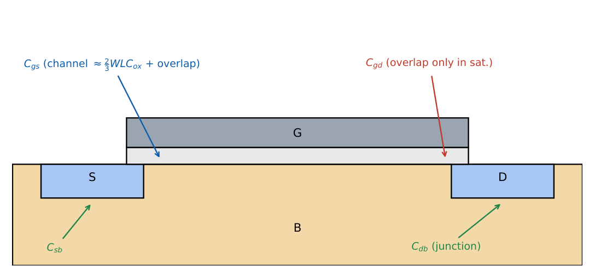
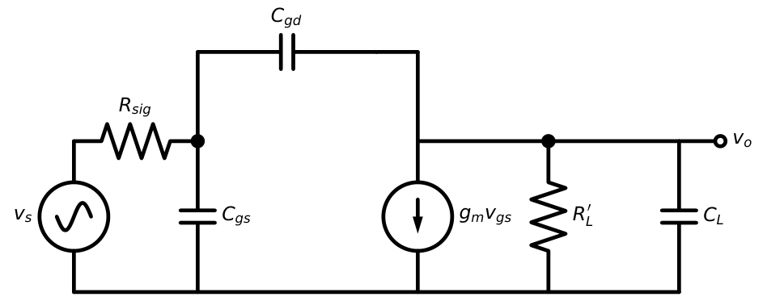
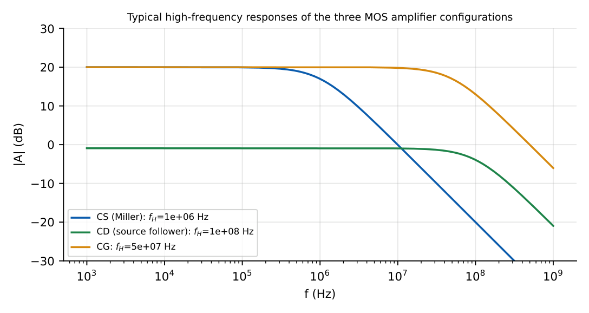
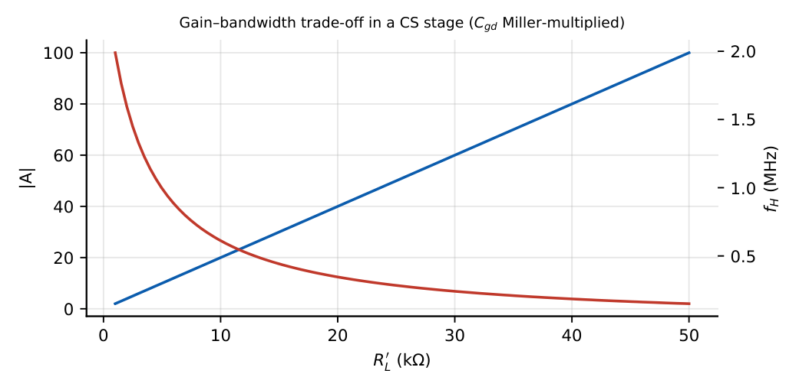

MOSFET Frequency Response
In this chapter
- 15.1 MOSFET parasitic capacitances
- 15.2 \(C_{gs}\), \(C_{gd}\), \(C_{db}\)
- 15.3 Miller effect
- 15.4 Low-frequency response
- 15.5 High-frequency response
- 15.6 Common-source frequency response
- 15.7 Common-gate frequency response
- 15.8 Source-follower frequency response
- 15.9 Gain-bandwidth trade-off
- 15.10 GATE numerical problems
15.1 MOSFET parasitic capacitances
Every MOSFET has capacitances between its terminals; they limit the high-frequency gain exactly as \(C_\pi\) and \(C_\mu\) do for the BJT.

15.2 \(C_{gs}\), \(C_{gd}\), \(C_{db}\)
Saturation: \(C_{gs}=\tfrac23WLC_{ox}+WL_{ov}C_{ox}\), \(C_{gd}=WL_{ov}C_{ox}\) (overlap only)
Triode (small \(V_{DS}\)): \(C_{gs}\approx C_{gd}\approx\tfrac12WLC_{ox}+WL_{ov}C_{ox}\)
Junctions: \(C_{db}=\dfrac{C_{db0}}{(1+V_{DB}/V_0)^{m}}\) (reverse bias)
Unity-gain frequency: \(f_T=\dfrac{g_m}{2\pi(C_{gs}+C_{gd})}\approx\dfrac{3\mu_nV_{ov}}{4\pi L^2}\)
Short channels give high \(f_T\): \(f_T\propto1/L^2\).
\(g_m=4\) mS, \(C_{gs}=1.6\) pF, \(C_{gd}=0.4\) pF: \(f_T=4\,\mathrm m/(2\pi\times2\ \mathrm{pF})=318\) MHz.

15.3 Miller effect
\(C_{gd}\) connects the input (gate) to the output (drain) of an inverting stage with gain \(A_v=-g_mR_L'\): \[C_{in,Miller}=C_{gd}(1+g_mR_L'),\qquad C_{out,Miller}\approx C_{gd}.\] \(C_{gd}\) is small but multiplied by \((1+|A_v|)\) and often dominates \(C_{gs}\).
\(C_{gd}=0.5\) pF, \(A_v=-20\): Miller contribution \(=0.5\times21=10.5\) pF, much larger than \(C_{gd}\) itself.
15.4 Low-frequency response
Same procedure as Chapter 11: each capacitor with its associated resistance.
\(f_{L1}=\dfrac{1}{2\pi(R_{sig}+R_G)C_1}\) \(f_{L2}=\dfrac{1}{2\pi(R_D+R_L)C_2}\) \(f_{LS}=\dfrac{1}{2\pi C_S(R_S\|1/g_m)}\)
\(f_L\approx\sqrt{f_{L1}^2+f_{L2}^2+f_{LS}^2}\) (or the largest one)
\(R_{sig}=10\) k, \(R_G=R_1\|R_2=66.7\) k, \(C_1=0.1\ \mu\)F: \(f_{L1}=1/(2\pi\times76.7\,\mathrm k\times0.1\,\mu)=20.8\) Hz. \(g_m=2\) mS, \(R_S=1\) k: \(R_S\|1/g_m=333\ \Omega\), \(C_S=10\ \mu\)F: \(f_{LS}=47.8\) Hz (dominant).
15.5 High-frequency response
Use the open-circuit time-constant method for the dominant pole: \(f_H\approx1/(2\pi\sum\tau_k)\).
15.6 Common-source frequency response
\(\tau_{in}=R_{sig}\left[C_{gs}+C_{gd}(1+g_mR_L')\right]\), \(\tau_{out}=R_L'(C_{gd}+C_L)\)
\(f_H\approx\dfrac1{2\pi(\tau_{in}+\tau_{out})}\) RHP zero at \(f_z=\dfrac{g_m}{2\pi C_{gd}}\)
\(g_m=2\) mS, \(C_{gs}=5\) pF, \(C_{gd}=1\) pF, \(C_L=2\) pF, \(R_{sig}=10\) k, \(R_L'=5\) k (\(g_mR_L'=10\)). \(\tau_{in}=10\,\mathrm k\times(5+11)\,\mathrm{pF}=160\) ns; \(\tau_{out}=5\,\mathrm k\times3\,\mathrm{pF}=15\) ns. \(f_H=1/(2\pi\times175\,\mathrm{ns})=0.91\) MHz. Zero: \(318\) MHz.
15.7 Common-gate frequency response
There is no Miller multiplication because the gate is AC grounded: \(C_{gd}\) connects output to ground. The input node (source) has low resistance \(R_{sig}\|(1/g_m)\), so its pole is far away.
Same device: input time constant \((10\,\mathrm k\|0.5\,\mathrm k)\times5\,\mathrm{pF}=2.4\) ns; output \(15\) ns; \(f_H=1/(2\pi\times17.4\,\mathrm{ns})=9.1\) MHz, about \(10\times\) better than the CS stage at the same gain \(|A_v|=10\).
15.8 Source-follower frequency response
\(C_{gs}\) is bootstrapped: the source follows the gate, so the effective input capacitance is \(C_{in}=C_{gd}+C_{gs}(1-A_v)\), very small for \(A_v\approx1\). The follower has a high bandwidth but its output impedance (\(1/g_m\)) can resonate with capacitive loads.
\(A_v=0.91\): \(C_{in}=1+5\times0.09=1.45\) pF; with \(R_{sig}=10\) k: \(f_H=11\) MHz.

15.9 Gain-bandwidth trade-off
Increasing \(R_L'\) raises the gain but also the Miller capacitance, lowering \(f_H\): the gain–bandwidth product is roughly constant, \(|A_M|f_H\to\dfrac1{2\pi R_{sig}C_{gd}}\) for large gain.

Bandwidth ranking at similar gain (from best to worst): CG \(\approx\) CD \(>\) cascode \(>\) CS. The cascode restores the CS gain with CG-like bandwidth because the CS transistor sees a low-impedance load (\(1/g_m\) of the CG device), so its Miller gain is only \(\approx-1\).
15.10 GATE numerical problems
Q1. \(g_m=4\) mS, \(C_{gs}+C_{gd}=2\) pF. \(f_T=\) MHz.
Q2. \(C_{gd}=0.5\) pF, \(|A_v|=20\). Total Miller input capacitance from \(C_{gd}\) is pF.
Q3. A CS amplifier with \(R_{sig}=1\) k\(\Omega\) has total input capacitance \(20\) pF (Miller included; neglect output pole). \(f_H=\) MHz.
Q4. Which MOS amplifier has the best high-frequency response? (A) CS (B) CG (C) both same (D) none.
Q5. \(WLC_{ox}=30\) fF, negligible overlap, saturation. \(C_{gs}=\) fF.
Q6. The RHP zero frequency for \(g_m=1\) mS, \(C_{gd}=1\) pF is MHz.
Answers: Q1: 318 MHz. Q2: \(0.5\times21=10.5\) pF. Q3: \(1/(2\pi\times10^3\times20\,\mathrm{pF})=7.96\) MHz. Q4: (B). Q5: \(20\) fF. Q6: \(10^{-3}/(2\pi\times10^{-12})=159\) MHz.
- Compute \(f_T\) if \(\mu_n=400\) cm\({}^2\)/V s, \(V_{ov}=0.3\) V, \(L=0.5\ \mu\)m. [\(\approx11.5\) GHz]
- CS with \(R_{sig}=50\) k, \(C_{gs}=2\) pF, \(C_{gd}=0.2\) pF, \(g_mR_L'=30\): \(f_H\) (input pole)? [\(\approx\) 0.4 MHz]
- Why does the cascode improve bandwidth? [Miller gain of the lower device is \(\approx-1\)]